Official student onboarding guide for one-time attendance setup,
daily routine logging, and predictive recovery roadmaps.
100% Timetable Precision: Don't worry about
calculation errors! All percentages, safety buffers, and roadmaps
sync automatically with your section timetable, academic calendar,
and university holidays.
01
Accessing GradeFlow (Web & Google Search)
GradeFlow runs smoothly inside your web browser. No app install or
heavy download is needed.
Mobile View
Open on Smartphone
Open Chrome, Safari, or any phone browser.
Search gradeflow vercel in Google.
Tap the top verified result:
GradeFlow | Academic analytics and GPA planning.
Or directly type:
https://grade-flow-six.vercel.app/
Laptop / PC View
Open on Desktop
Open Chrome, Edge, or Brave on your PC or laptop.
Search gradeflow vercel in Google or paste
the direct link.
Click on
GradeFlow | Academic analytics and GPA planning.
Bookmark the tab (Ctrl + D) for fast daily
attendance access.
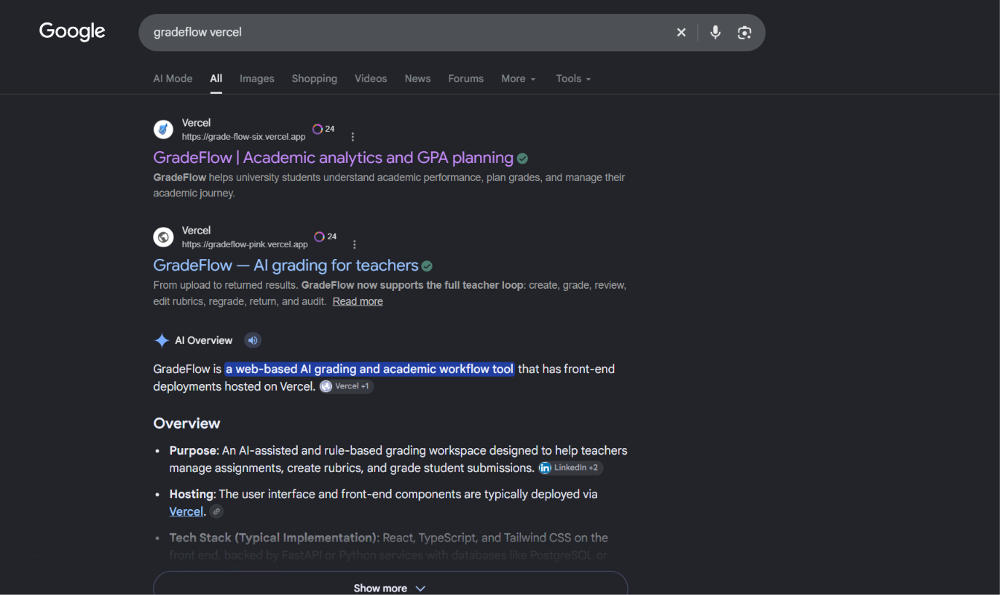
02
Signing In with Your University Registration Number
Your academic branch, section timetable, and saved attendance are
securely linked to your official 12-digit university registration
number.
Mobile View
Mobile Login Steps
Tap on Student Login (or enter your Reg No in
the home search bar).
Type your 12-digit university registration number (e.g.
230301120327).
Tap Continue to open your student dashboard.
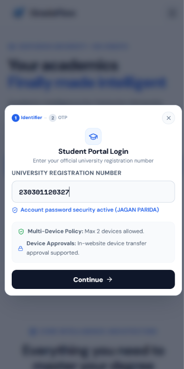
Laptop / PC View
Laptop / Desktop Login Steps
Click Student Login on the top bar or home hero
section.
Type your 12-digit registration number into the Student Portal
Login dialog.
Click Continue. Your branch and section routine
load automatically.
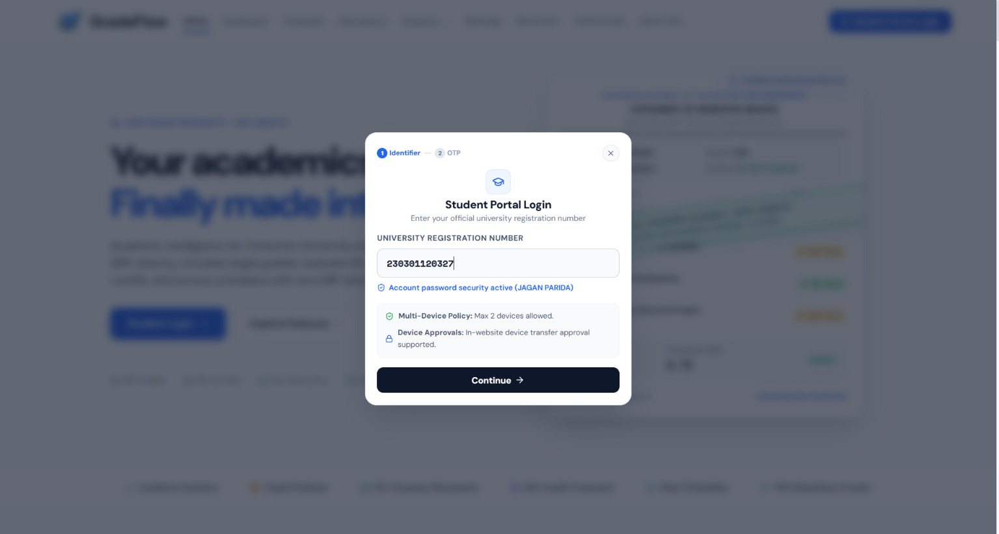
03
Navigating to Attendance Tracker
Open the Attendance Intelligence workspace to view today's timetable,
current percentages, and predictive tools.
Mobile View
Mobile Navigation
Tap the Menu icon (☰) at the top right of your
phone screen.
Tap on % Attendance Tracker (highlighted with
the green dot).
Your section routine and today's attendance cards load
immediately.
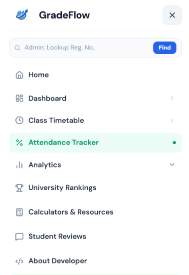
Laptop / PC View
Desktop Navigation
In the top horizontal navigation bar, click directly on
Attendance.
Your section is highlighted automatically in the left sidebar
and header badge.
You will see your attendance percentage, timetable, and
predictor modules.
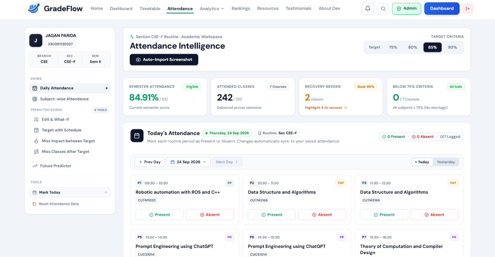
04
One-Time Attendance Setup (Unlocks Full Suite)
One-Time Setup (Save to Cloud): You only need to
import your attendance once! After confirming and saving to cloud,
you never have to upload screenshots again.
Taking Screenshot Mid-Day? If your ERP portal
attendance was updated up to earlier classes and you still have
classes left today, open Daily Attendance and
mark Present or Absent for
today's remaining classes. If all classes for today are already
finished and included in the screenshot, simply start marking from
Tomorrow / Next Day!
Recommended: AI Auto-Import
Method A: Screenshot Auto-Import
1. Take Long Screenshot: Open your college ERP
portal and capture a full screenshot of your subject-wise
attendance table.
2. Upload to GradeFlow: Click
Auto-Import Screenshot (camera button) and
upload or drop the image.
3. Verify All Subjects: Carefully review each
subject row. Verify attended and total classes match your ERP
portal (edit any number if needed).
4. Confirm & Save: Click
Confirm & Apply to Tracker. Your data is
saved to the cloud and all 7 modules unlock!
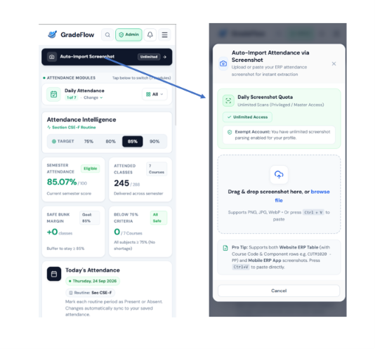
Alternative: Manual Setup
Method B: Manual Entry via Edit & What-If
1. Open Edit & What-If: Click the
Edit & What-If tab in the left sidebar
menu.
2. Select Subjects: Choose each subject from
your semester routine catalog.
3. Enter Numbers: Type your current
Attended Classes and
Delivered Classes for Theory and Lab.
4. Save to Cloud: Click
Save & Sync Attendance. Your baseline data
is securely stored in MongoDB.
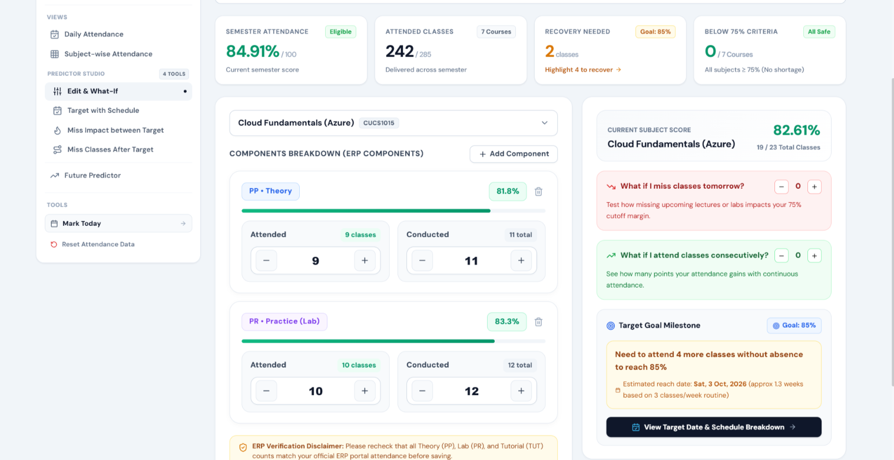
05
Daily Attendance Routine Logging (Day 2 Onwards)
After your initial setup is complete, keep your attendance 100%
accurate every day with just 10 seconds of effortless routine logging.
Mobile View
How to Give Daily Attendance on Phone
1. Open Daily Attendance: Tap the top module
pill bar to select Daily Attendance.
2. View Today's Routine: Today's classes appear
automatically based on your section timetable.
3. Mark Present or Absent: Tap
Present (Green) or
Absent (Red) on each period card as your
classes finish.
4. Instant Live Update: Your overall percentage
and safe bunk margins update immediately!
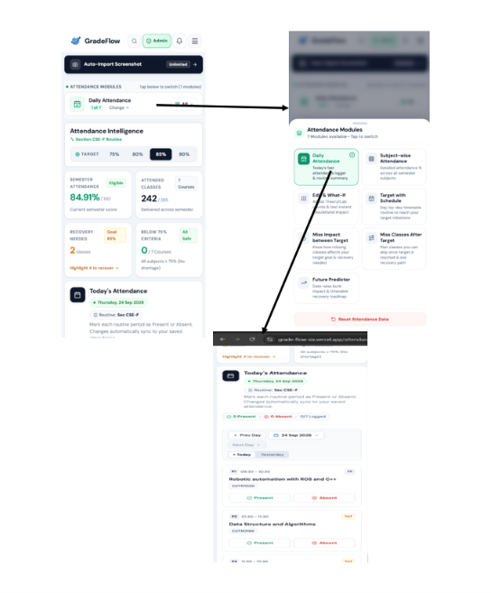
Laptop View
How to Give Daily Attendance on Laptop
1. Open Daily Attendance: Click
Daily Attendance in the left sidebar menu.
2. View Scheduled Routine: Check period
timings, subject codes, faculty names, and room numbers.
3. Mark Each Class: Click
Present or Absent on each
period card.
4. Real-Time Cloud Sync: All subject metrics
and predictive recovery roadmaps update instantly.
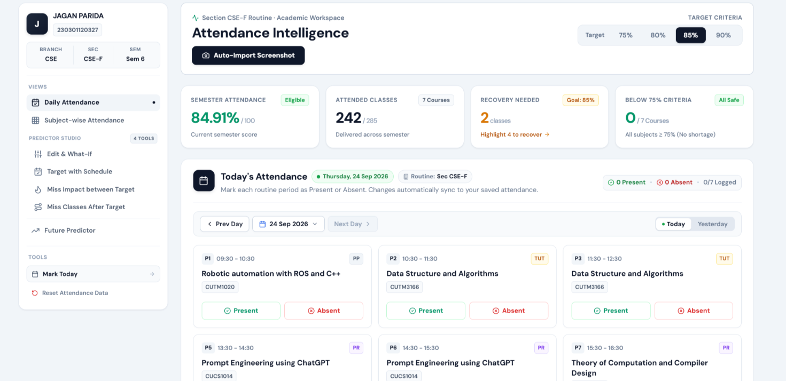
1. Daily Attendance (Today's Live Routine Logger)
Daily Operation
Connects directly to your college timetable. Displays today's exact
scheduled periods with subject codes, professor names, and classroom
venues.
Mark Daily Classes: Click Present or Absent for
each scheduled lecture and lab session.
Date Switcher: Use Prev/Next Day to log
attendance for past dates or preview upcoming days.
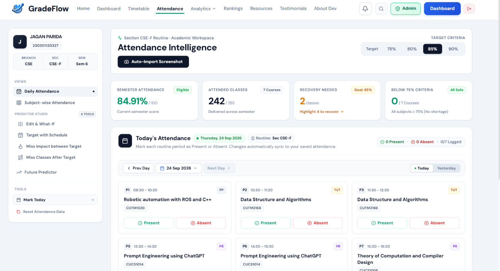
2. Subject-wise Attendance (Academic Matrix)
Academic Matrix
Displays your complete subject breakdown with color-coded safety
badges: Safe (Green ≥ 75%), Borderline (Yellow 70-75%), and
Critical (Red < 70%).
Theory vs Lab Split: View separate attended and
conducted counts for lectures and practical labs.
Bunk Margin & Deficit: Tells you exactly how
many classes you can skip, or how many you must attend.
A risk-free testing playground. Test what happens to your percentage
if you attend or skip upcoming classes — without altering your
saved database data.
Test What-If Scenarios: Tap + or - on attended or
conducted numbers to see the live percentage jump or drop.
Manual Calibration: Easily correct any
discrepancies between GradeFlow and your college ERP.
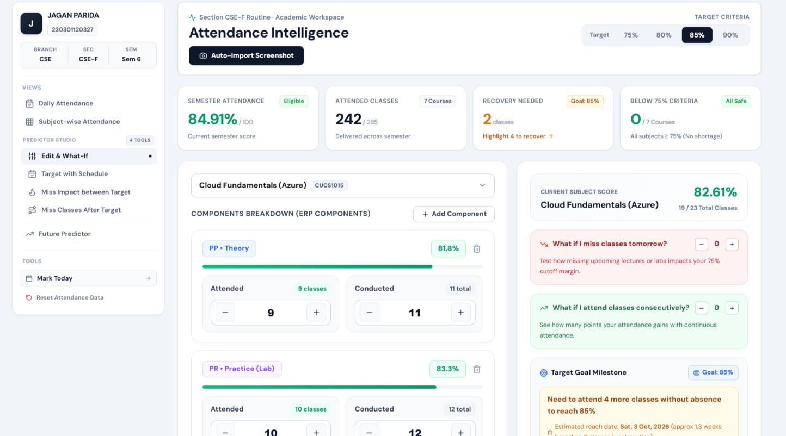
4. Target with Schedule (Sprint Recovery Roadmap)
Goal Achievement
The ultimate recovery engine for students below 75%. Pick your
target (75%, 80%, etc.) and the system calculates the exact future
date when you will achieve it.
Set Your Target: Select 75%, 80%, or custom
target criteria for each subject.
Follow the Roadmap: Reads your section timetable
to show exact upcoming lectures to attend consecutively.
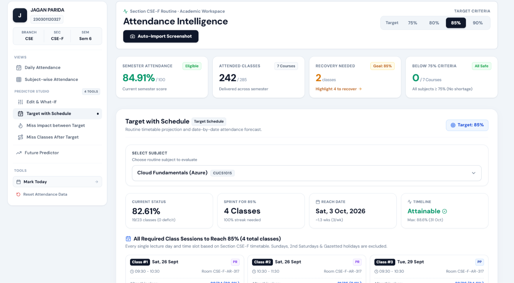
5. Miss Impact between Target (Absence Penalty Simulator)
Risk Assessment
What happens if you fall sick or miss a class while working towards
your 75% target? This simulator shows the exact percentage drop and
extra lectures needed.
Select Planned Misses: Choose 1, 2, or 3 missed
classes to see the exact percentage penalty.
Revised Recovery Date: Shows how many extra
classes are added to your streak and the new milestone date.
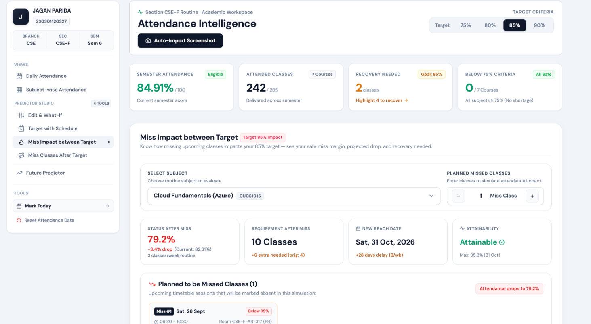
6. Miss Classes After Target (Fest, Trip & Hackathon Planner)
Safe Bunk Planning
Designed for students who have achieved ≥ 75% and want to plan
leaves for college fests, hackathons, or trips without dropping into
danger.
Safe Bunk Allowance: See exactly how many classes
you can skip while staying safely above 75%.
Post-Leave Roadmap: Step-by-step roadmap showing
how your attendance will re-stabilize after returning.
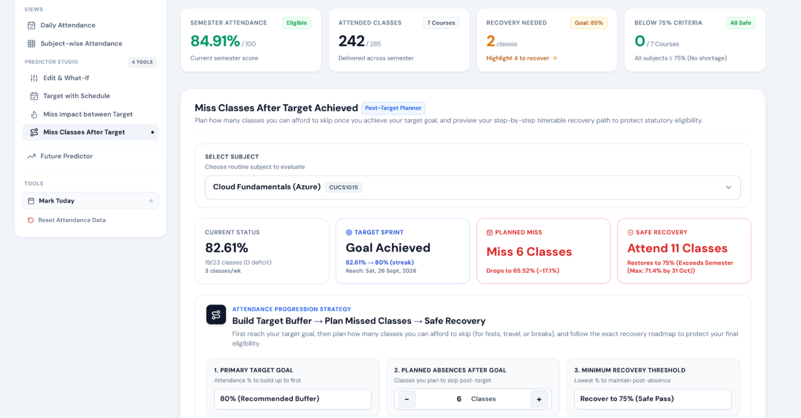
7. Future Predictor (14-Day Calendar Simulator)
Date Simulation
An interactive 14-day upcoming timetable view. Tap on any future day
(e.g. Next Friday) to simulate skipping classes and view your
projected percentage.
Select Upcoming Dates: Tap future calendar days
or use quick presets (e.g. Long Weekend).
Projected Impact: Instantly recalculates your
semester percentage if you skip those scheduled periods.
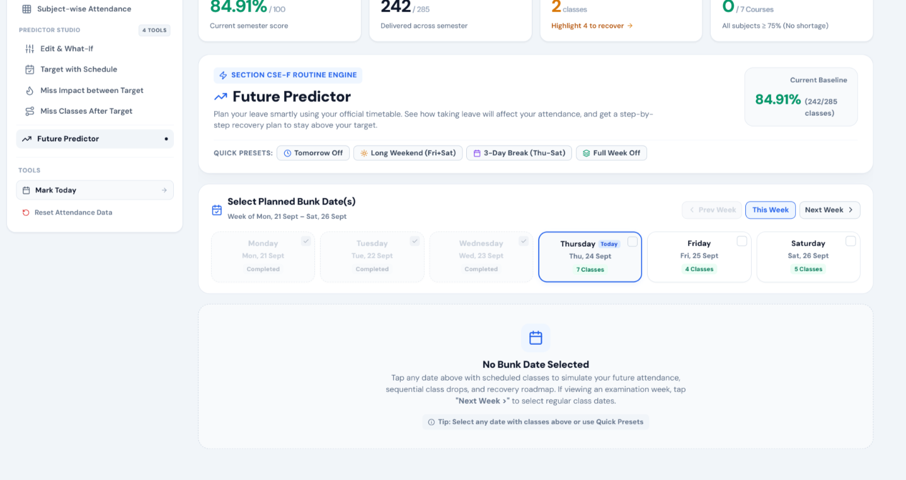
08
Important Tips & Student FAQ
Essential security features, data protection rules, and routine update
mechanisms built into GradeFlow.
Timetable Updates by Admin
Whenever admin updates routines or exam schedules, all predictors
immediately follow the updated database timetable automatically.
Tip: Simply refresh browser once to fetch latest timetable sync.
Accidental Reset Protection
Reset Attendance button has an active 10-second countdown circular
timer modal. Click Undo Reset within 10s to
restore all data!
Safety: Screenshot auto-import is limited to 2 scans per day.
100% Academic Data Accuracy Guaranteed
Calculations sync in real time with section schedules, room
assignments, and official university holidays.
GradeFlow Live
GradeFlow Academic Intelligence Suite • Designed for University
Students
Website: https://grade-flow-six.vercel.app/ • Google Search:
gradeflow vercel